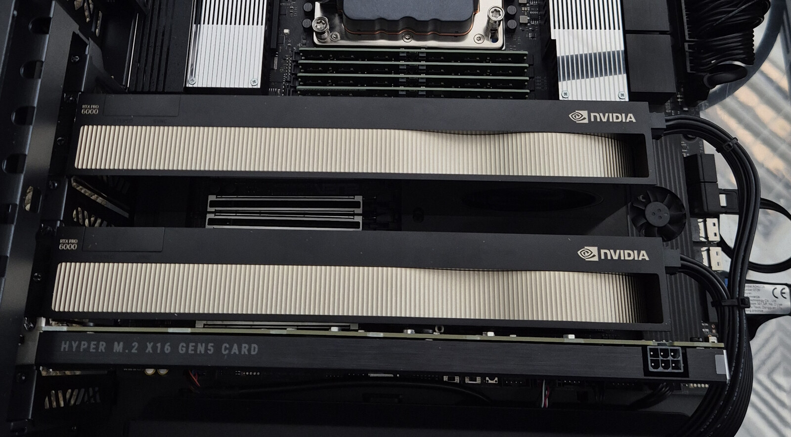

ARGODRIVE DS4 KIMI K3.1 / THE BUILD
How we run Kimi K3.1 Pro
on two GPUs.
Two RTX PRO 6000 Blackwell · 192 GB of VRAM · 80 GiB of RAM in the VM · four NVMe drives · 1.45 TB of experts.
Kimi K3.1 Pro has 2.8 trillion parameters. Its experts occupy 1.45 TB, and our two graphics cards have 192 GB of VRAM between them. With the experts on four NVMe drives, we measured what the second GPU bought us.
Given the six-token prompt “The three main financial statements are”, Kimi generated 512 tokens at 3.87 tok/s on one card and 5.52 on two with the Qwen drafter. That’s a 43% gain on a completion Qwen predicts well. A separate chat prompt reached 2.93 tok/s on two cards over 256 generated tokens. Processing a 1,512-token input stayed near 40 tok/s on either setup.
| Workload | One GPU | Two GPUs |
|---|---|---|
| Financial completion · plain | 2.04 | 2.97 |
| Same completion · Qwen drafter | 3.87 | 5.52 |
| 1,512-token prefill · plain | 39.5 | 39.7 |
The second card raised GPU cache capacity from 1,536 to 7,239 experts. More of the experts needed for the next token could stay in VRAM. Even with both cards, waiting for expert reads took 85% of decode time on the profiled financial completion and 78% on the chat run. See the timing breakdown.
- Model
- Kimi K3.1 Pro by Moonshot AI. 2.8 trillion parameters, a mixture of experts: 92 layers of 896 experts, 16 used per layer for each token.
- Weights
- 82,432 expert files of 17.5 MB each (1.45 TB, in the 4-bit MXFP4 format Moonshot ships) and a 62 GB spine at 8 bits.
- Machine
- One Threadripper workstation: two NVIDIA RTX PRO 6000 Blackwell cards (96 GB each), an Ubuntu VM with 16 cores and 80 GiB of RAM, four NVMe drives.
- Context
- Measured up to 16,384 tokens.
- Output
- The same logits as our one-card reference runs at all 4,316 positions compared. No experts skipped. Not yet compared with Moonshot’s own implementation.
- Software
- Argodrive DS4 Kimi K3.1, release
k31-cuda-20261119, source on GitHub. Built on Salvatore Sanfilippo’s ds4.
Start with the arithmetic.
Kimi K3.1 Pro is a mixture-of-experts model from Moonshot AI. It has 92 expert layers with 896 experts in each, and every layer uses 16 of them for each token. That is close to 1,500 experts per token. One expert is a 17.5 MB file, so a single token touches about 26 GB of weights.
Our machine cannot hold 1.45 TB in memory, so the experts live on NVMe drives and the engine fetches the ones the router asks for. If every one of them came from the drives we would get about 1.4 tokens a second, because the four drives together deliver roughly 36 GB/s when the engine is waiting on them. Everything that makes the build faster than that is a way of not reading an expert: keep it on the card, keep it in RAM, or make one read serve several tokens.
The machine.
It is one tower: a Threadripper workstation with two RTX PRO 6000 Blackwell cards and four NVMe drives, three of them joined in a RAID0. The engine runs in an Ubuntu virtual machine with 16 cores and 80 GiB of RAM. Everything on this page happens inside that box. There is no second machine and no network storage.

| Where | What | How much |
|---|---|---|
| VRAM, both cards | The spine: everything that is not an expert, at 8 bits | 62 GB |
| VRAM, both cards | The expert cache: what is left of both cards after the spine | 7,239 experts, 127 GB |
| RAM | A pinned pool of experts that are one upload away from a card | 56 GiB, about 3,400 experts |
| RAID0 of three NVMe drives | The most used experts first | 73,993 experts, 1.30 TB |
| Fourth NVMe drive | The rest of the model, plus second copies of 35,974 experts | 44,413 experts, 0.78 TB |
The spine is the attention, the routers and the embeddings. It never leaves VRAM. The experts are not converted or shrunk: they are the weights Moonshot publishes, in the same 4-bit format, cut into one file per expert. The two drive groups overlap on purpose: an expert with a copy on both can be read from whichever will deliver it sooner.
One token, step by step.
The drawing follows a single token through the machine. Press a step to hold it there, or let it run. Switching to one card shows what the second card changes.
A drawing of the order of events, not a recording. The lit cells are a small sample, not 896 experts or a measured hit rate. Card sizes, expert counts and speeds are the measured ones.
- The router picks. Attention and the router run on the card, layer by layer. In each layer the router chooses 16 of 896 experts, and the same choice is made on the CPU so the host knows what to fetch.
- Three places to look. An expert already in the card’s cache is ready. One in the RAM pool needs an upload. Anything else needs a drive.
- Reads go to the drive that will finish first. Reader threads read directly into pinned memory, bypassing the page cache, two chunks per file. For an expert with two homes the engine compares what each drive is already busy with and how fast it is.
- Nothing waits for the whole set. Each expert starts computing as soon as its bytes are on the card. While the card runs attention, the engine is already fetching a few experts for the next layer.
- The layer ends with its slowest expert. A layer needs all 16 results, so one late read holds up the other fifteen. Most of the tuning in this engine is about that last arrival.
- Halfway, the token changes cards. With two cards, layers 0 to 45 run on the first and 46 to 92 on the second. The token’s state is copied across before the cut and back after the last layer, card to card.
Hot experts.
Within one text the router keeps coming back to the same experts. In our 512-token test run, 72% of the drive reads fetched an expert that had already been read earlier in the same run and had since fallen out of both caches. The whole design leans on that habit.
- Placement. When the weights were laid out, the most used experts went to the fastest storage, the RAID0. The fourth drive holds the rest and the second copies.
- Memory. The cards keep 7,239 experts between them and the RAM pool about 3,400 more. An expert pushed out of VRAM drops into the pool only if it has been used more often lately than the one it would replace.
- Eviction. When a cache is full something has to go. In our two-card runs without the drafter, the card gives up the entry with the lowest recent use count. With the drafter, each block ranks a layer’s experts by how many of its rows want them and keeps the top of the list.
Which experts are hot depends on the text. We tried loading the caches in advance from the statistics of other texts, and it gained nothing.
A small model that saves reads.
The other way to avoid reads is to make one read serve several tokens. A small model, Qwen3-0.6B, runs beside Kimi and guesses the next stretch of text, up to 63 tokens. Kimi then checks the guesses in one pass, a block of rows, and keeps them up to the first one it disagrees with. The tokens that come out are always the ones Kimi would have chosen alone. We compare the two ways of running by hashing the logits, and they match bit for bit.
The gain comes from sharing. Neighbouring tokens tend to want the same experts, and a block reads each expert once for all of its rows.
Wide blocks only happen when the drafter guesses long stretches correctly.
How much this helps depends on what is being written. On the financial-statements prompt we use as our standard test, Kimi keeps 89% of Qwen’s drafts and decode reaches 5.52 tok/s. Two other continuations ran at 2.98 and 3.11 tok/s with the same settings, and a chat prompt at 2.93.
What the second card did, and what it did not.
Splitting the spine let each GPU use its remaining VRAM to cache experts. On the financial completion, moving activations between cards took 1.2% of decode time and the expert calculations took 0.5%. Waiting for expert reads dominated that run.
Prefill exercises the drives differently. A long prompt selects many different experts within a layer. Both configurations read from the same four drives, and their prompt-processing rates were nearly identical at both input lengths we compared. See the full measurements.
Where the time goes.
The remaining 12% is the rest of the forward pass. On a chat prompt the same four are 78%, 4.1%, 3.1% and 1.6%.
So the list of things that would make this machine faster is short: more cache, or faster drives. We did try to be clever instead. Keeping a chosen set of experts resident, with the list taken from the same text’s own statistics, which is knowledge no real run has, gained 1.8% on our standard prompt and 3.7% on chat. A larger drafter disagreed with Kimi 21 times instead of 23. Starting the next block early while the drafter was still guessing turned 5.43 tok/s into 5.44.
One thing we did not plan for. A drive behind an external link began answering reads with zeros, and no error was reported anywhere. Since then, a directory we cannot fully trust is read against a table of checksums, and a bad read is served from another copy.
The numbers.
The same three tests on one card and on two, measured the same day. Prefill is how fast the prompt is read; decode is how fast the answer is written.
| Setup | 512-token prompt: prefill tok/s | decode tok/s | 1,512-token prompt: prefill tok/s | decode tok/s | 6-token prompt: decode tok/s |
|---|---|---|---|---|---|
| One card | 16.0 | 1.60 | 39.5 | 1.74 | 2.04 |
| Two cards | 16.1 | 2.05 | 39.7 | 2.26 | 2.97 |
| With the Qwen drafter | |||||
| One card | 16.0 | 3.95 | 39.6 | 3.01 | 3.87 |
| Two cards | 15.9 | 4.56 | 39.3 | 3.57 | 5.52 |
Decode is 200 tokens after the 512-token prompt, 128 after the 1,512-token one and 512 after the 6-token one. Logit hashes matched the one-card reference at every position compared. Each run is a fresh process, greedy, on raw text. The runs as JSON →
Reproduce the 5.52 tok/s financial completion
On Linux with two 96 GB RTX PRO 6000 Blackwell cards, build the tagged engine in a new directory. The workstation had 80 GiB of host RAM. The installation guide covers the CUDA tools, Q8_0 spine and extracted MXFP4 experts. Prepare the Qwen sidecar and its Python dependencies with Qwen3-0.6B-Base at revision da87bfb6.
git clone --depth 1 --branch k31-cuda-20261119 \
https://github.com/argonautlabsai/argodrive-ds4-kimi-k3.1.git kimi-benchmark
cd kimi-benchmark
make ds4 CUDA_ARCH=sm_120The measured layout placed 73,993 experts on a three-drive RAID0 and 44,413 on the fourth NVMe, including 35,974 second copies. Use a fresh shell and a fresh engine process for each run. Point the variables below at your expert directories, the Kimi tokenizer metadata and the Python environment with CUDA-enabled PyTorch.
# Set these paths to the prepared files on your workstation.
export KIMI_DATA=/path/to/kimi-k31
export DS4_K3_EXPERT_DIR=/path/to/raid0/experts
export DS4_K3_EXPERT_DIR_B=/path/to/fourth-nvme/experts
export DS4_K3_QWEN_DIR=/path/to/Qwen3-0.6B-Base
export DS4_K3_QWEN_META="$KIMI_DATA/meta"
export DS4_K3_QWEN_PY=/path/to/venv/bin/python
export DS4_K3_QWEN_SCRIPT="$PWD/tools/kimi-k3/qwen_sidecar.py"
CUDA_VISIBLE_DEVICES=0,1 DS4_CUDA_STREAM_SPLIT=46 \
DS4_K3_CACHE_RAM_GB=56 DS4_K3_QWEN=1 \
DS4_K3_VERIFY_RANK=1 DS4_K3_VERIFY_PF_SCALE=8 DS4_K3_TRACE_HASH=1 \
./ds4 -m "$KIMI_DATA/k3-spine.gguf" --cuda --raw \
--gpu-devices 0,1 --gpu-vram auto --ssd-streaming \
--ssd-streaming-cold --ssd-streaming-cache-experts 16 \
--temp 0 -c 2048 -n 512 -p "The three main financial statements are"In the engine’s K3 decode split line, read the steady rate. Our run recorded 511 tokens in 92.57 seconds (5.52 tok/s) after the first generated token. Three qualification runs ranged from 5.50 to 5.53 tok/s. Compare your result with t-rec512-q in the published run data.
- A 13,087-token prompt, with the context cache at 16k: read at 106 tok/s, then written at 1.93 tok/s, or 2.23 with the drafter.
- Through the chat endpoint, three requests of 36, 185 and 1,543 prompt tokens took 52, 28 and 75 seconds on two cards and 62, 33 and 89 on one, with the same three answers.
- On one card, 11 November: a 6,769-token prompt read at 120 tok/s, and short chat written at about 2 tok/s.
- The same engine on a MacBook Pro M5 Max, 11 November: 2.49 tok/s with the drafter. The Mac section →
What is checked, and what is not.
Fast and wrong is easy, so every change has to give the same output as before. We hash the logits, the model’s raw scores for every possible next token, at each position and compare them with a reference run. For the 19 November release that was 4,316 positions: plain decoding, the drafter, long prompts, chat, one card and two. None differed.
That proves something narrow. Caches, read scheduling, the drafter and the split between cards do not change the arithmetic. It does not prove that our build matches Moonshot’s own implementation. We have not run that comparison, and our spine is stored at 8 bits. We do not skip experts, drop layers or shrink the experts.
How it got here.
- Kimi K3 on a MacBook Pro with four drives, in our fork of deltafin: about 1 tok/s.
- Kimi K3.1 Pro on one RTX PRO 6000. About 2 tok/s, no drafter.
- The Qwen drafter, with output identical to plain decoding.
- K3.1’s sparse attention: contexts up to 16,384 tokens.
- The same engine on a MacBook Pro M5 Max, through Metal.
- Wider drafter blocks: 3.21, then 3.79 tok/s on the 512-token test.
- The layers split over two cards: 5.52 tok/s.
If you are writing about this.
You are welcome to. A few things will keep the piece accurate.
- Give a speed its test and its date. 5.52 tok/s means two cards, the Qwen drafter, a six-token financial prompt and 512 generated tokens, on 19 November 2026. Without the drafter the same test gives 2.97.
- Reading is not writing. 120 tok/s, or 16, or 40, is how fast a prompt is read. It says nothing about how fast an answer appears.
- The drafter figure is a best case. It comes from text the small model predicts well. Other text ran at about 3 tok/s.
- This is our build, not Moonshot’s service. We have not compared its output with their implementation.
Argonaut Labs ran Moonshot AI’s 2.8-trillion-parameter Kimi K3.1 Pro on one workstation with two 96 GB RTX PRO 6000 Blackwell GPUs and four NVMe drives. On 19 November 2026, its CUDA port of Salvatore Sanfilippo’s ds4 generated 512 tokens from a six-token financial prompt at 5.52 tok/s with a Qwen drafter, up from 3.87 on one GPU. The same two-card completion ran at 2.97 tok/s with the drafter off. A separate 53-token chat prompt reached 2.93 tok/s over 256 generated tokens with the drafter.
A paragraph you can use as it stands. To cite the page: Argonaut Labs, “How we run Kimi K3.1 Pro on two GPUs”, 19 November 2026, https://argonautlabs.ai/research/kimi-k31-build.html
The photograph and the schematic on this page may be reproduced with a credit to Argonaut Labs and a link back here. For questions and corrections, open a discussion on GitHub.
SOURCES
Where each figure comes from.
- The 19 November runs, one card and two, as JSON
- The Kimi K3.1 Pro article: every measurement since 6 November, with definitions and limits
- README: two cards, what changed, where the time goes and what was tried
- README: what the engine does per token
- The code: release k31-cuda-20261119
- Installation guide
- DeepSeek V4.1 Flash on the same two cards
This port builds on Salvatore Sanfilippo’s ds4, with its acknowledgements to llama.cpp and GGML preserved. The drafter recipe comes from the deltafin Kimi K3 work. The Kimi checkpoint is Moonshot’s work. Argonaut Labs develops the port and the storage experiments with assistance from Claude and ChatGPT, with human-led testing and review.